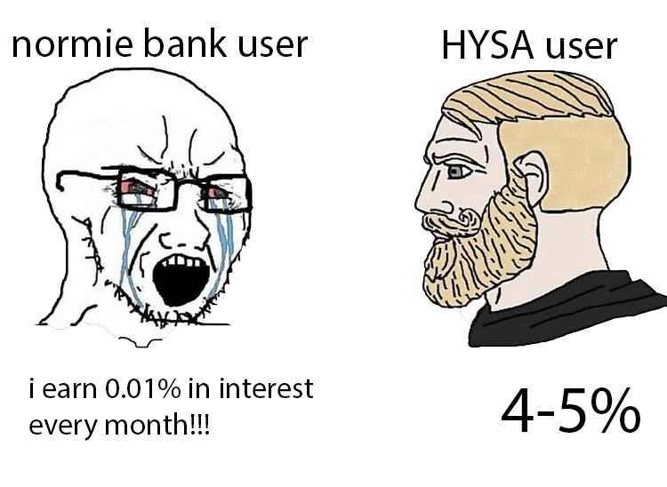

Stats:
- 22 y/o
- Uni student (with loans)
- Living with parents
- No bills
- Minimum wage job
These are some basic skills/tools/info that are working for me.
Budget your money
Budgeting is the key to managing your money. It helps you define and organize your spending habits and saving goals.
There's a ton of different rules you can follow, online calculators/apps that make budgeting easy.
Example: 50/30/20 rule
Personally, I do everything on spreadsheets. I generally allocate more to saving and investing.
-Reduce spending
I try to make it a habit to spend money on necessities (groceries, gas, etc). Anything left over by the time I get my next paycheck
I either use it for silly purchases or save/invest it.
-Save
I typically save a % of my paycheck, then divide that amount up for different categories (emergency funds, big purchases). Sometimes I'll invest a portion of it.
A general guideline for emergency fund is to save 3-6 months worth of expenses.
High Yield Savings Account 😩😩

I think high-yield savings accounts (HYSA) are super underrated. They offer a higher interest rates compared to traditional banks, which generally offer 0.01%.
Example:
If you have $500 in savings with a traditional bank you'd earn ~$0.05/year in interest.
In a HYSA with 4%, you'd earn ~$20/year.
This motivated me to save more money because after a certain amount, I'd earn enough interest per month to cover a meal or two.
Invest
It's better to just do some research on this one. I like telling people to invest just to plant the seed in their mind.
The earlier you invest the better. Buy low sell high blah blah
Consider getting a credit card
I started off with a student credit card. A lot of banks offer it.
Good credit -> better interest rates on loans -> saves you A LOT of money
Youtubers i watch sometimes
Other things that help me
- Buy items second hand rather than new
- Deleted all food delivery apps (i'm not paying 2-3x the price of my food anymore)
- Sell items I don't use anymore